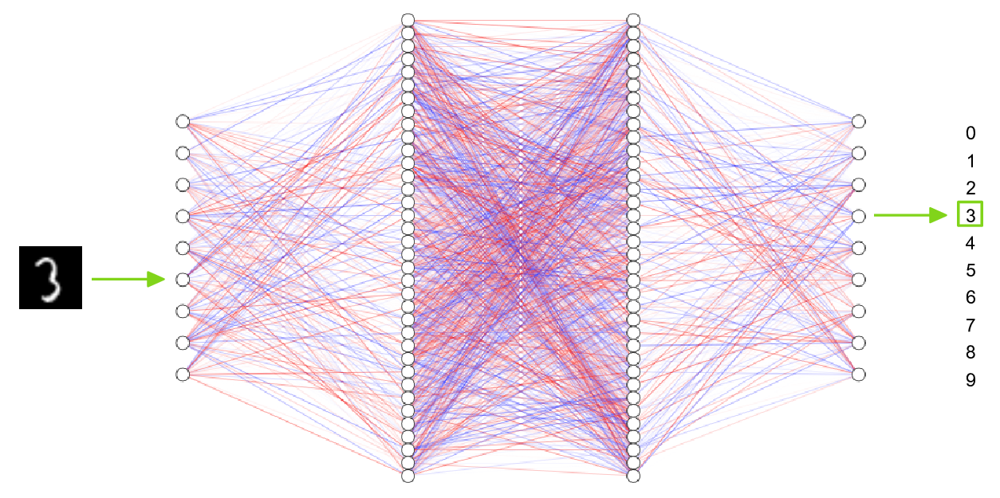
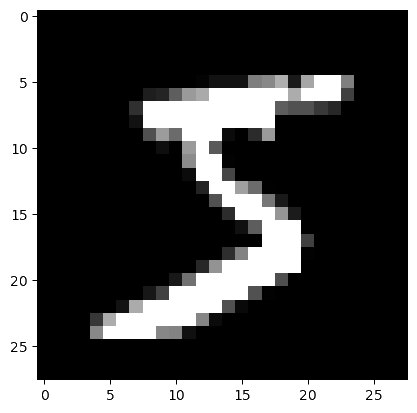
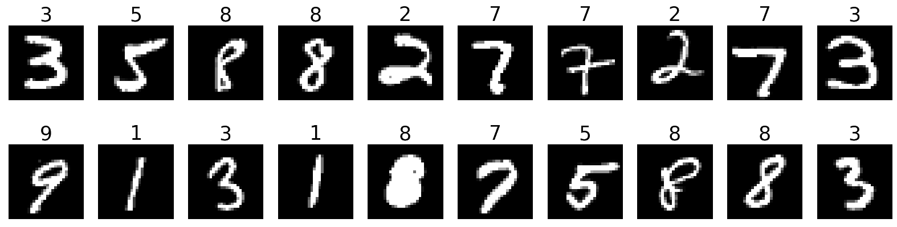
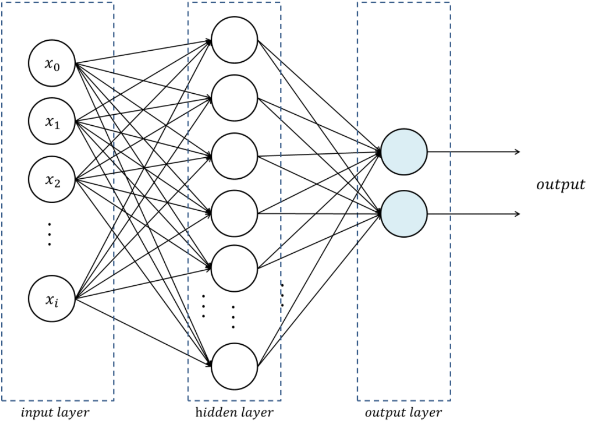

import torch
from torchvision import datasets, transforms
from matplotlib import pyplot as pltExample: classifying the MNIST dataset
Here is an example you can try on your own after the workshop: the classification of the MNIST dataset—a classic of machine learning.
The MNIST dataset
The MNIST is a classic dataset commonly used for testing machine learning systems. It consists of pairs of images of handwritten digits and their corresponding labels.
The images are composed of 28x28 pixels of greyscale RGB codes ranging from 0 to 255 and the labels are the digits from 0 to 9 that each image represents.
There are 60,000 training pairs and 10,000 testing pairs.
The goal is to build a neural network which can learn from the training set to properly identify the handwritten digits and which will perform well when presented with the testing set that it has never seen. This is a typical case of supervised learning.

Now, let’s explore the MNIST with PyTorch.
Prepare data
First we need to download, unzip, and transform the data.
Where to store data in clusters
We will all use the same data. It would make little sense to all download it in our home directory.
On the Alliance clusters, a good place to store data shared amongst members of a project is in the /project file system.
You usually belong to /project/def-<group>, where <group> is the name of your PI. You can access it from your home directory through the symbolic link ~/projects/def-<group>.
In our training cluster, we are all part of the group def-sponsor00, accessible through /project/def-sponsor00 (or the hyperlink ~/projects/def-sponsor00).
We will thus all access the MNIST data in ~/projects/def-sponsor00/data.
How to obtain the data?
The dataset can be downloaded directly from the MNIST website, but the PyTorch package TorchVision has tools to download and transform several classic vision datasets, including the MNIST.
help(torchvision.datasets.MNIST)Help on class MNIST in module torchvision.datasets.mnist:
class MNIST(torchvision.datasets.vision.VisionDataset)
| MNIST(root: str, train: bool = True,
| transform: Optional[Callable] = None,
| target_transform: Optional[Callable] = None,
| download: bool = False) -> None
|
| Args:
| root (string): Root directory of dataset where
| MNIST/raw/train-images-idx3-ubyte and
| MNIST/raw/t10k-images-idx3-ubyte exists.
| train (bool, optional): If True, creates dataset from
| train-images-idx3-ubyte, otherwise from t10k-images-idx3-ubyte.
| download (bool, optional): If True, downloads the dataset from the
| internet and puts it in root directory. If dataset is already
| downloaded, it is not downloaded again.
| transform (callable, optional): A function/transform that takes in
| an PIL image and returns a transformed version.
| E.g, transforms.RandomCrop
| target_transform (callable, optional): A function/transform that
| takes in the target and transforms it.Note that here too, the root argument sets the location of the downloaded data and we will use /project/def-sponsor00/data/.
Prepare the data
First, let’s load the needed libraries:
The MNIST dataset already consists of a training and a testing sets, so we don’t have to split the data manually. Instead, we can directly create 2 different objects with the same function (train=True selects the train set and train=False selects the test set).
We will transform the raw data to tensors and normalize them using the mean and standard deviation of the MNIST training set: 0.1307 and 0.3081 respectively (even though the mean and standard deviation of the test data are slightly different, it is important to normalize the test data with the values of the training data to apply the same treatment to both sets).
So we first need to define a transformation:
transform = transforms.Compose([
transforms.ToTensor(),
transforms.Normalize((0.1307,), (0.3081,))
])We can now create our data objects
Training data
Remember that train=True selects the training set of the MNIST.
train_data = datasets.MNIST(
'~/projects/def-sponsor00/data',
train=True, download=True, transform=transform)0.3%0.7%1.0%1.3%1.7%2.0%2.3%2.6%3.0%3.3%3.6%4.0%4.3%4.6%5.0%5.3%5.6%6.0%6.3%6.6%6.9%7.3%7.6%7.9%8.3%8.6%8.9%9.3%9.6%9.9%10.2%10.6%10.9%11.2%11.6%11.9%12.2%12.6%12.9%13.2%13.6%13.9%14.2%14.5%14.9%15.2%15.5%15.9%16.2%16.5%16.9%17.2%17.5%17.9%18.2%18.5%18.8%19.2%19.5%19.8%20.2%20.5%20.8%21.2%21.5%21.8%22.1%22.5%22.8%23.1%23.5%23.8%24.1%24.5%24.8%25.1%25.5%25.8%26.1%26.4%26.8%27.1%27.4%27.8%28.1%28.4%28.8%29.1%29.4%29.8%30.1%30.4%30.7%31.1%31.4%31.7%32.1%32.4%32.7%33.1%33.4%33.7%34.0%34.4%34.7%35.0%35.4%35.7%36.0%36.4%36.7%37.0%37.4%37.7%38.0%38.3%38.7%39.0%39.3%39.7%40.0%40.3%40.7%41.0%41.3%41.7%42.0%42.3%42.6%43.0%43.3%43.6%44.0%44.3%44.6%45.0%45.3%45.6%45.9%46.3%46.6%46.9%47.3%47.6%47.9%48.3%48.6%48.9%49.3%49.6%49.9%50.2%50.6%50.9%51.2%51.6%51.9%52.2%52.6%52.9%53.2%53.6%53.9%54.2%54.5%54.9%55.2%55.5%55.9%56.2%56.5%56.9%57.2%57.5%57.9%58.2%58.5%58.8%59.2%59.5%59.8%60.2%60.5%60.8%61.2%61.5%61.8%62.1%62.5%62.8%63.1%63.5%63.8%64.1%64.5%64.8%65.1%65.5%65.8%66.1%66.4%66.8%67.1%67.4%67.8%68.1%68.4%68.8%69.1%69.4%69.8%70.1%70.4%70.7%71.1%71.4%71.7%72.1%72.4%72.7%73.1%73.4%73.7%74.0%74.4%74.7%75.0%75.4%75.7%76.0%76.4%76.7%77.0%77.4%77.7%78.0%78.3%78.7%79.0%79.3%79.7%80.0%80.3%80.7%81.0%81.3%81.7%82.0%82.3%82.6%83.0%83.3%83.6%84.0%84.3%84.6%85.0%85.3%85.6%85.9%86.3%86.6%86.9%87.3%87.6%87.9%88.3%88.6%88.9%89.3%89.6%89.9%90.2%90.6%90.9%91.2%91.6%91.9%92.2%92.6%92.9%93.2%93.6%93.9%94.2%94.5%94.9%95.2%95.5%95.9%96.2%96.5%96.9%97.2%97.5%97.9%98.2%98.5%98.8%99.2%99.5%99.8%100.0%
100.0%
2.0%4.0%6.0%7.9%9.9%11.9%13.9%15.9%17.9%19.9%21.9%23.8%25.8%27.8%29.8%31.8%33.8%35.8%37.8%39.7%41.7%43.7%45.7%47.7%49.7%51.7%53.7%55.6%57.6%59.6%61.6%63.6%65.6%67.6%69.6%71.5%73.5%75.5%77.5%79.5%81.5%83.5%85.5%87.4%89.4%91.4%93.4%95.4%97.4%99.4%100.0%
100.0%Test data
train=False selects the test set.
test_data = datasets.MNIST(
'~/projects/def-sponsor00/data',
train=False, transform=transform)Exploring the data
Data inspection
First, let’s check the size of train_data:
print(len(train_data))60000That makes sense since the MNIST’s training set has 60,000 pairs. train_data has 60,000 elements and we should expect each element to be of size 2 since it is a pair. Let’s double-check with the first element:
print(len(train_data[0]))2So far, so good. We can print that first pair:
print(train_data[0])(tensor([[[-0.4242, -0.4242, -0.4242, -0.4242, -0.4242, -0.4242, -0.4242,
-0.4242, -0.4242, -0.4242, -0.4242, -0.4242, -0.4242, -0.4242,
-0.4242, -0.4242, -0.4242, -0.4242, -0.4242, -0.4242, -0.4242,
-0.4242, -0.4242, -0.4242, -0.4242, -0.4242, -0.4242, -0.4242],
[-0.4242, -0.4242, -0.4242, -0.4242, -0.4242, -0.4242, -0.4242,
-0.4242, -0.4242, -0.4242, -0.4242, -0.4242, -0.4242, -0.4242,
-0.4242, -0.4242, -0.4242, -0.4242, -0.4242, -0.4242, -0.4242,
-0.4242, -0.4242, -0.4242, -0.4242, -0.4242, -0.4242, -0.4242],
[-0.4242, -0.4242, -0.4242, -0.4242, -0.4242, -0.4242, -0.4242,
-0.4242, -0.4242, -0.4242, -0.4242, -0.4242, -0.4242, -0.4242,
-0.4242, -0.4242, -0.4242, -0.4242, -0.4242, -0.4242, -0.4242,
-0.4242, -0.4242, -0.4242, -0.4242, -0.4242, -0.4242, -0.4242],
[-0.4242, -0.4242, -0.4242, -0.4242, -0.4242, -0.4242, -0.4242,
-0.4242, -0.4242, -0.4242, -0.4242, -0.4242, -0.4242, -0.4242,
-0.4242, -0.4242, -0.4242, -0.4242, -0.4242, -0.4242, -0.4242,
-0.4242, -0.4242, -0.4242, -0.4242, -0.4242, -0.4242, -0.4242],
[-0.4242, -0.4242, -0.4242, -0.4242, -0.4242, -0.4242, -0.4242,
-0.4242, -0.4242, -0.4242, -0.4242, -0.4242, -0.4242, -0.4242,
-0.4242, -0.4242, -0.4242, -0.4242, -0.4242, -0.4242, -0.4242,
-0.4242, -0.4242, -0.4242, -0.4242, -0.4242, -0.4242, -0.4242],
[-0.4242, -0.4242, -0.4242, -0.4242, -0.4242, -0.4242, -0.4242,
-0.4242, -0.4242, -0.4242, -0.4242, -0.4242, -0.3860, -0.1951,
-0.1951, -0.1951, 1.1795, 1.3068, 1.8032, -0.0933, 1.6887,
2.8215, 2.7197, 1.1923, -0.4242, -0.4242, -0.4242, -0.4242],
[-0.4242, -0.4242, -0.4242, -0.4242, -0.4242, -0.4242, -0.4242,
-0.4242, -0.0424, 0.0340, 0.7722, 1.5359, 1.7396, 2.7960,
2.7960, 2.7960, 2.7960, 2.7960, 2.4396, 1.7650, 2.7960,
2.6560, 2.0578, 0.3904, -0.4242, -0.4242, -0.4242, -0.4242],
[-0.4242, -0.4242, -0.4242, -0.4242, -0.4242, -0.4242, -0.4242,
0.1995, 2.6051, 2.7960, 2.7960, 2.7960, 2.7960, 2.7960,
2.7960, 2.7960, 2.7960, 2.7706, 0.7595, 0.6195, 0.6195,
0.2886, 0.0722, -0.4242, -0.4242, -0.4242, -0.4242, -0.4242],
[-0.4242, -0.4242, -0.4242, -0.4242, -0.4242, -0.4242, -0.4242,
-0.1951, 2.3633, 2.7960, 2.7960, 2.7960, 2.7960, 2.7960,
2.0960, 1.8923, 2.7197, 2.6433, -0.4242, -0.4242, -0.4242,
-0.4242, -0.4242, -0.4242, -0.4242, -0.4242, -0.4242, -0.4242],
[-0.4242, -0.4242, -0.4242, -0.4242, -0.4242, -0.4242, -0.4242,
-0.4242, 0.5940, 1.5614, 0.9377, 2.7960, 2.7960, 2.1851,
-0.2842, -0.4242, 0.1231, 1.5359, -0.4242, -0.4242, -0.4242,
-0.4242, -0.4242, -0.4242, -0.4242, -0.4242, -0.4242, -0.4242],
[-0.4242, -0.4242, -0.4242, -0.4242, -0.4242, -0.4242, -0.4242,
-0.4242, -0.4242, -0.2460, -0.4115, 1.5359, 2.7960, 0.7213,
-0.4242, -0.4242, -0.4242, -0.4242, -0.4242, -0.4242, -0.4242,
-0.4242, -0.4242, -0.4242, -0.4242, -0.4242, -0.4242, -0.4242],
[-0.4242, -0.4242, -0.4242, -0.4242, -0.4242, -0.4242, -0.4242,
-0.4242, -0.4242, -0.4242, -0.4242, 1.3450, 2.7960, 1.9942,
-0.3988, -0.4242, -0.4242, -0.4242, -0.4242, -0.4242, -0.4242,
-0.4242, -0.4242, -0.4242, -0.4242, -0.4242, -0.4242, -0.4242],
[-0.4242, -0.4242, -0.4242, -0.4242, -0.4242, -0.4242, -0.4242,
-0.4242, -0.4242, -0.4242, -0.4242, -0.2842, 1.9942, 2.7960,
0.4668, -0.4242, -0.4242, -0.4242, -0.4242, -0.4242, -0.4242,
-0.4242, -0.4242, -0.4242, -0.4242, -0.4242, -0.4242, -0.4242],
[-0.4242, -0.4242, -0.4242, -0.4242, -0.4242, -0.4242, -0.4242,
-0.4242, -0.4242, -0.4242, -0.4242, -0.4242, 0.0213, 2.6433,
2.4396, 1.6123, 0.9504, -0.4115, -0.4242, -0.4242, -0.4242,
-0.4242, -0.4242, -0.4242, -0.4242, -0.4242, -0.4242, -0.4242],
[-0.4242, -0.4242, -0.4242, -0.4242, -0.4242, -0.4242, -0.4242,
-0.4242, -0.4242, -0.4242, -0.4242, -0.4242, -0.4242, 0.6068,
2.6306, 2.7960, 2.7960, 1.0904, -0.1060, -0.4242, -0.4242,
-0.4242, -0.4242, -0.4242, -0.4242, -0.4242, -0.4242, -0.4242],
[-0.4242, -0.4242, -0.4242, -0.4242, -0.4242, -0.4242, -0.4242,
-0.4242, -0.4242, -0.4242, -0.4242, -0.4242, -0.4242, -0.4242,
0.1486, 1.9432, 2.7960, 2.7960, 1.4850, -0.0806, -0.4242,
-0.4242, -0.4242, -0.4242, -0.4242, -0.4242, -0.4242, -0.4242],
[-0.4242, -0.4242, -0.4242, -0.4242, -0.4242, -0.4242, -0.4242,
-0.4242, -0.4242, -0.4242, -0.4242, -0.4242, -0.4242, -0.4242,
-0.4242, -0.2206, 0.7595, 2.7833, 2.7960, 1.9560, -0.4242,
-0.4242, -0.4242, -0.4242, -0.4242, -0.4242, -0.4242, -0.4242],
[-0.4242, -0.4242, -0.4242, -0.4242, -0.4242, -0.4242, -0.4242,
-0.4242, -0.4242, -0.4242, -0.4242, -0.4242, -0.4242, -0.4242,
-0.4242, -0.4242, -0.4242, 2.7451, 2.7960, 2.7451, 0.3904,
-0.4242, -0.4242, -0.4242, -0.4242, -0.4242, -0.4242, -0.4242],
[-0.4242, -0.4242, -0.4242, -0.4242, -0.4242, -0.4242, -0.4242,
-0.4242, -0.4242, -0.4242, -0.4242, -0.4242, -0.4242, -0.4242,
0.1613, 1.2305, 1.9051, 2.7960, 2.7960, 2.2105, -0.3988,
-0.4242, -0.4242, -0.4242, -0.4242, -0.4242, -0.4242, -0.4242],
[-0.4242, -0.4242, -0.4242, -0.4242, -0.4242, -0.4242, -0.4242,
-0.4242, -0.4242, -0.4242, -0.4242, -0.4242, 0.0722, 1.4596,
2.4906, 2.7960, 2.7960, 2.7960, 2.7578, 1.8923, -0.4242,
-0.4242, -0.4242, -0.4242, -0.4242, -0.4242, -0.4242, -0.4242],
[-0.4242, -0.4242, -0.4242, -0.4242, -0.4242, -0.4242, -0.4242,
-0.4242, -0.4242, -0.4242, -0.1187, 1.0268, 2.3887, 2.7960,
2.7960, 2.7960, 2.7960, 2.1342, 0.5686, -0.4242, -0.4242,
-0.4242, -0.4242, -0.4242, -0.4242, -0.4242, -0.4242, -0.4242],
[-0.4242, -0.4242, -0.4242, -0.4242, -0.4242, -0.4242, -0.4242,
-0.4242, -0.1315, 0.4159, 2.2869, 2.7960, 2.7960, 2.7960,
2.7960, 2.0960, 0.6068, -0.3988, -0.4242, -0.4242, -0.4242,
-0.4242, -0.4242, -0.4242, -0.4242, -0.4242, -0.4242, -0.4242],
[-0.4242, -0.4242, -0.4242, -0.4242, -0.4242, -0.4242, -0.1951,
1.7523, 2.3633, 2.7960, 2.7960, 2.7960, 2.7960, 2.0578,
0.5940, -0.3097, -0.4242, -0.4242, -0.4242, -0.4242, -0.4242,
-0.4242, -0.4242, -0.4242, -0.4242, -0.4242, -0.4242, -0.4242],
[-0.4242, -0.4242, -0.4242, -0.4242, 0.2758, 1.7650, 2.4524,
2.7960, 2.7960, 2.7960, 2.7960, 2.6815, 1.2686, -0.2842,
-0.4242, -0.4242, -0.4242, -0.4242, -0.4242, -0.4242, -0.4242,
-0.4242, -0.4242, -0.4242, -0.4242, -0.4242, -0.4242, -0.4242],
[-0.4242, -0.4242, -0.4242, -0.4242, 1.3068, 2.7960, 2.7960,
2.7960, 2.2742, 1.2941, 1.2559, -0.2206, -0.4242, -0.4242,
-0.4242, -0.4242, -0.4242, -0.4242, -0.4242, -0.4242, -0.4242,
-0.4242, -0.4242, -0.4242, -0.4242, -0.4242, -0.4242, -0.4242],
[-0.4242, -0.4242, -0.4242, -0.4242, -0.4242, -0.4242, -0.4242,
-0.4242, -0.4242, -0.4242, -0.4242, -0.4242, -0.4242, -0.4242,
-0.4242, -0.4242, -0.4242, -0.4242, -0.4242, -0.4242, -0.4242,
-0.4242, -0.4242, -0.4242, -0.4242, -0.4242, -0.4242, -0.4242],
[-0.4242, -0.4242, -0.4242, -0.4242, -0.4242, -0.4242, -0.4242,
-0.4242, -0.4242, -0.4242, -0.4242, -0.4242, -0.4242, -0.4242,
-0.4242, -0.4242, -0.4242, -0.4242, -0.4242, -0.4242, -0.4242,
-0.4242, -0.4242, -0.4242, -0.4242, -0.4242, -0.4242, -0.4242],
[-0.4242, -0.4242, -0.4242, -0.4242, -0.4242, -0.4242, -0.4242,
-0.4242, -0.4242, -0.4242, -0.4242, -0.4242, -0.4242, -0.4242,
-0.4242, -0.4242, -0.4242, -0.4242, -0.4242, -0.4242, -0.4242,
-0.4242, -0.4242, -0.4242, -0.4242, -0.4242, -0.4242, -0.4242]]]), 5)And you can see that it is a tuple with:
print(type(train_data[0]))<class 'tuple'>What is that tuple made of?
print(type(train_data[0][0]))
print(type(train_data[0][1]))<class 'torch.Tensor'>
<class 'int'>It is made of the tensor for the first image (remember that we transformed the images into tensors when we created the objects train_data and test_data) and the integer of the first label (which you can see is 5 when you print train_data[0][1]).
So since train_data[0][0] is the tensor representing the image of the first pair, let’s check its size:
print(train_data[0][0].size())torch.Size([1, 28, 28])That makes sense: a color image would have 3 layers of RGB values (so the size in the first dimension would be 3), but because the MNIST has black and white images, there is a single layer of values—the values of each pixel on a gray scale—so the first dimension has a size of 1. The 2nd and 3rd dimensions correspond to the width and length of the image in pixels, hence 28 and 28.
Your turn:
Run the following:
print(train_data[0][0][0])
print(train_data[0][0][0][0])
print(train_data[0][0][0][0][0])And think about what each of them represents.
Then explore the test_data object.
Plotting an image
For this, we will use pyplot from matplotlib.
First, we select the image of the first pair and we resize it from 3 to 2 dimensions by removing its dimension of size 1 with torch.squeeze:
img = torch.squeeze(train_data[0][0])Then, we plot it with pyplot, but since we are in a cluster, instead of showing it to screen with plt.show(), we save it to file:
plt.imshow(img, cmap='gray')This is what that first image looks like:

And indeed, it matches the first label we explored earlier (train_data[0][1]).
Image with pixel values
We can plot it with more details by showing the value of each pixel in the image. One little twist is that we need to pick a threshold value below which we print the pixel values in white otherwise they would not be visible (black on near black background). We also round the pixel values to one decimal digit so as not to clutter the result.
imgplot = plt.figure(figsize = (12, 12))
sub = imgplot.add_subplot(111)
sub.imshow(img, cmap='gray')
width, height = img.shape
thresh = img.max() / 2.5
for x in range(width):
for y in range(height):
val = round(img[x][y].item(), 1)
sub.annotate(str(val), xy=(y, x),
horizontalalignment='center',
verticalalignment='center',
color='white' if img[x][y].item() < thresh else 'black')
Batch processing
PyTorch provides the torch.utils.data.DataLoader class which combines a dataset and an optional sampler and provides an iterable (while training or testing our neural network, we will iterate over that object). It allows, among many other things, to set the batch size and shuffle the data.
So our last step in preparing the data is to pass it through DataLoader.
Create DataLoaders
Training data
train_loader = torch.utils.data.DataLoader(
train_data, batch_size=20, shuffle=True)Test data
test_loader = torch.utils.data.DataLoader(
test_data, batch_size=20, shuffle=False)Plot a batch of images with labels
Now that we have passed our data through DataLoader, it is easy to select one batch from it. Let’s plot an entire batch of images with their labels.
First, we need to get one batch of training images and their labels:
dataiter = iter(train_loader)
batchimg, batchlabel = dataiter.next()Then, we can plot them:
batchplot = plt.figure(figsize=(20, 5))
for i in torch.arange(20):
sub = batchplot.add_subplot(2, 10, i+1, xticks=[], yticks=[])
sub.imshow(torch.squeeze(batchimg[i]), cmap='gray')
sub.set_title(str(batchlabel[i].item()), fontsize=25)
NN to classify the MNIST
Let’s build a multi-layer perceptron (MLP): the simplest neural network. It is a feed-forward (i.e. no loop), fully-connected (i.e. each neuron of one layer is connected to all the neurons of the adjacent layers) neural network with a single hidden layer.

Load packages
import torch
import torch.nn as nn
import torch.nn.functional as F
import torch.optim as optim
from torch.utils.tensorboard import SummaryWriter
from torchvision import datasets, transforms
from torch.optim.lr_scheduler import StepLRThe torch.nn.functional module contains all the functions of the torch.nn package.
These functions include loss functions, activation functions, pooling functions…
Create SummaryWriter instance
This SummaryWritter instance will be used by TensorBoard.
writer = SummaryWriter()Define network architecture
# To build a model, create a subclass of torch.nn.Module:
class Net(nn.Module):
def __init__(self):
super(Net, self).__init__()
self.fc1 = nn.Linear(784, 128)
self.fc2 = nn.Linear(128, 10)
# Method for the forward pass:
def forward(self, x):
x = torch.flatten(x, 1)
x = self.fc1(x)
x = F.relu(x)
x = self.fc2(x)
output = F.log_softmax(x, dim=1)
return outputPython’s class inheritance gives our subclass all the functionality of torch.nn.Module while allowing us to customize it.
Define a training function
def train(model, device, train_loader, optimizer, epoch):
model.train()
for batch_idx, (data, target) in enumerate(train_loader):
data, target = data.to(device), target.to(device)
optimizer.zero_grad() # reset the gradients to 0
output = model(data)
loss = F.nll_loss(output, target) # negative log likelihood
writer.add_scalar("Loss/train", loss, epoch)
loss.backward()
optimizer.step()
if batch_idx % 10 == 0:
print('Train Epoch: {} [{}/{} ({:.0f}%)]\tLoss: {:.6f}'.format(
epoch, batch_idx * len(data), len(train_loader.dataset),
100. * batch_idx / len(train_loader), loss.item()))Define a testing function
def test(model, device, test_loader):
model.eval()
test_loss = 0
correct = 0
with torch.no_grad():
for data, target in test_loader:
data, target = data.to(device), target.to(device)
output = model(data)
# Sum up batch loss:
test_loss += F.nll_loss(output, target, reduction='sum').item()
# Get the index of the max log-probability:
pred = output.argmax(dim=1, keepdim=True)
correct += pred.eq(target.view_as(pred)).sum().item()
test_loss /= len(test_loader.dataset)
# Print a summary
print('\nTest set: Average loss: {:.4f}, Accuracy: {}/{} ({:.0f}%)\n'.format(
test_loss, correct, len(test_loader.dataset),
100. * correct / len(test_loader.dataset)))Define a function to run the network
def main():
epochs = 1
torch.manual_seed(1)
device = torch.device('cuda:0' if torch.cuda.is_available() else 'cpu')
transform = transforms.Compose([
transforms.ToTensor(),
transforms.Normalize((0.1307,), (0.3081,))
])
train_data = datasets.MNIST(
'~/projects/def-sponsor00/data',
train=True, download=True, transform=transform)
test_data = datasets.MNIST(
'~/projects/def-sponsor00/data',
train=False, transform=transform)
train_loader = torch.utils.data.DataLoader(train_data, batch_size=64)
test_loader = torch.utils.data.DataLoader(test_data, batch_size=1000)
model = Net().to(device) # create instance of our network and send it to device
optimizer = optim.Adadelta(model.parameters(), lr=1.0)
scheduler = StepLR(optimizer, step_size=1, gamma=0.7)
for epoch in range(1, epochs + 1):
train(model, device, train_loader, optimizer, epoch)
test(model, device, test_loader)
scheduler.step()Run the network
main()Close TensorBoard
Now we can write pending events to disk and close TensorBoard.
writer.flush()
writer.close()The code is working. Time to actually train our model!
Jupyter is a fantastic tool. It has a major downside however: when you launch a Jupyter server, you are running a job on a compute node. If you want to play for 8 hours in Jupyter, you are requesting an 8 hour job. Now, most of the time you spend on Jupyter is spent typing, running bits and pieces of code, or doing nothing at all. If you ask for GPUs, many CPUs, and lots of RAM, all of it will remain idle almost all of the time. It is a really suboptimal use of the Alliance resources.
In addition, if you ask for lots of resources for a long time, you will have to wait a long time in the queue before they get allocated to you.
Lastly, you will go through your allocation quickly.
A much better strategy is to develop and test your code (with very little data, few epochs, etc.) in an interactive job (with salloc) or in Jupyter, then, launch an sbatch job to actually train your model. This ensures that heavy duty resources such as GPU(s) are only allocated to you when you are actually needing and using them.
Train and test our model
Log in a cluster
Open a terminal and SSH to a cluster.
Load necessary modules
First, we need to load the Python and CUDA modules. This is done with the Lmod tool through the module command. Here are some key Lmod commands:
# Get help on the module command
$ module help
# List modules that are already loaded
$ module list
# See which modules are available for a tool
$ module avail <tool>
# Load a module
$ module load <module>[/<version>]Here are the modules we need:
$ module load nixpkgs/16.09 gcc/7.3.0 cuda/10.0.130 cudnn/7.6 python/3.8.2Install Python packages
You also need the Python packages matplotlib, torch, torchvision, and tensorboard.
On the Alliance clusters, you need to create a virtual environment in which you install packages with pip, then activate that virtual environment.
Do not use Anaconda.
While Anaconda is a great tool on personal computers, it is not an appropriate tool when working on the Alliance clusters: binaries are unoptimized for those clusters and library paths are inconsistent with their architecture. Anaconda installs packages in $HOME where it creates a very large number of small files. It can also create conflicts by modifying .bashrc.
Create a virtual environment:
$ virtualenv --no-download ~/envActivate the virtual environment:
$ source ~/env/bin/activateUpdate pip:
(env) $ pip install --no-index --upgrade pipInstall the packages you need in the virtual environment:
(env) $ pip install --no-cache-dir --no-index matplotlib torch torchvision tensorboardIf you want to exit the virtual environment, you can press Ctrl-D or run:
(env) $ deactivateWrite a Python script
Create a directory for this project and cd into it:
mkdir mnist
cd mnistStart a Python script with the text editor of your choice:
nano nn.pyIn it, copy-paste the code we played with in Jupyter, but this time have it run for 10 epochs:
import torch
import torch.nn as nn
import torch.nn.functional as F
import torch.optim as optim
from torch.utils.tensorboard import SummaryWriter
from torchvision import datasets, transforms
from torch.optim.lr_scheduler import StepLR
writer = SummaryWriter()
class Net(nn.Module):
def __init__(self):
super(Net, self).__init__()
self.fc1 = nn.Linear(784, 128)
self.fc2 = nn.Linear(128, 10)
def forward(self, x):
x = torch.flatten(x, 1)
x = self.fc1(x)
x = F.relu(x)
x = self.fc2(x)
output = F.log_softmax(x, dim=1)
return output
def train(model, device, train_loader, optimizer, epoch):
model.train()
for batch_idx, (data, target) in enumerate(train_loader):
data, target = data.to(device), target.to(device)
optimizer.zero_grad()
output = model(data)
loss = F.nll_loss(output, target)
writer.add_scalar("Loss/train", loss, epoch)
loss.backward()
optimizer.step()
if batch_idx % 10 == 0:
print('Train Epoch: {} [{}/{} ({:.0f}%)]\tLoss: {:.6f}'.format(
epoch, batch_idx * len(data), len(train_loader.dataset),
100. * batch_idx / len(train_loader), loss.item()))
def test(model, device, test_loader):
model.eval()
test_loss = 0
correct = 0
with torch.no_grad():
for data, target in test_loader:
data, target = data.to(device), target.to(device)
output = model(data)
test_loss += F.nll_loss(output, target, reduction='sum').item()
pred = output.argmax(dim=1, keepdim=True)
correct += pred.eq(target.view_as(pred)).sum().item()
test_loss /= len(test_loader.dataset)
print('\nTest set: Average loss: {:.4f}, Accuracy: {}/{} ({:.0f}%)\n'.format(
test_loss, correct, len(test_loader.dataset),
100. * correct / len(test_loader.dataset)))
def main():
epochs = 10 # don't forget to change the number of epochs
torch.manual_seed(1)
device = torch.device('cuda:0' if torch.cuda.is_available() else 'cpu')
transform = transforms.Compose([
transforms.ToTensor(),
transforms.Normalize((0.1307,), (0.3081,))
])
train_data = datasets.MNIST(
'~/projects/def-sponsor00/data',
train=True, download=True, transform=transform)
test_data = datasets.MNIST(
'~/projects/def-sponsor00/data',
train=False, transform=transform)
train_loader = torch.utils.data.DataLoader(train_data, batch_size=64)
test_loader = torch.utils.data.DataLoader(test_data, batch_size=1000)
model = Net().to(device)
optimizer = optim.Adadelta(model.parameters(), lr=1.0)
scheduler = StepLR(optimizer, step_size=1, gamma=0.7)
for epoch in range(1, epochs + 1):
train(model, device, train_loader, optimizer, epoch)
test(model, device, test_loader)
scheduler.step()
main()
writer.flush()
writer.close()Write a Slurm script
Write a shell script with the text editor of your choice:
nano nn.shThis is what you want in that script:
#!/bin/bash
#SBATCH --time=5:0
#SBATCH --cpus-per-task=1
#SBATCH --gres=gpu:1
#SBATCH --mem=4G
#SBATCH --output=%x_%j.out
#SBATCH --error=%x_%j.err
python ~/mnist/nn.py--time accepts these formats: “min”, “min:s”, “h:min:s”, “d-h”, “d-h:min” & “d-h:min:s”
%x will get replaced by the script name & %j by the job number
Submit a job
Finally, you need to submit your job to Slurm:
$ sbatch ~/mnist/nn.shYou can check the status of your job with:
$ sqPD = pending
R = running
CG = completing (Slurm is doing the closing processes)
No information = your job has finished running
You can cancel it with:
$ scancel <jobid>Once your job has finished running, you can display efficiency measures with:
$ seff <jobid>Explore model metrics
TensorBoard is a web visualization toolkit developed by TensorFlow which can be used with PyTorch.
Because we have sent our model’s metrics logs to TensorBoard as part of our code, a directory called runs with those logs was created in our ~/mnist directory.
Launch TensorBoard
TensorBoard requires too much processing power to be run on the login node. When you run long jobs, the best strategy is to launch it in the background as part of the job. This allows you to monitor your model as it is running (and cancel it if things don’t look right).
Example:
#!/bin/bash
#SBATCH ...
#SBATCH ...
tensorboard --logdir=runs --host 0.0.0.0 &
python ~/mnist/nn.pyBecause we only have 1 GPU and are taking turns running our jobs, we need to keep our jobs very short here. So we will launch a separate job for TensorBoard. This time, we will launch an interactive job:
salloc --time=1:0:0 --mem=2000MTo launch TensorBoard, we need to activate our Python virtual environment (TensorBoard was installed by pip):
source ~/projects/def-sponsor00/env/bin/activateThen we can launch TensorBoard in the background:
tensorboard --logdir=~/mnist/runs --host 0.0.0.0 &Now, we need to create a connection with SSH tunnelling between your computer and the compute note running your TensorBoard job.
Connect to TensorBoard
You need to connect to TensorBoard from your computer to monitor the metrics.
From a new terminal on your computer, run:
ssh -NfL localhost:6006:<hostname>:6006 userxxx@uu.c3.caReplace <hostname> by the name of the compute node running your salloc job. You can find it by looking at your prompt (your prompt shows <username>@<hostname>).
Replace <userxxx> by your user name.
Now, you can open a browser on your computer and access TensorBoard at http://localhost:6006.